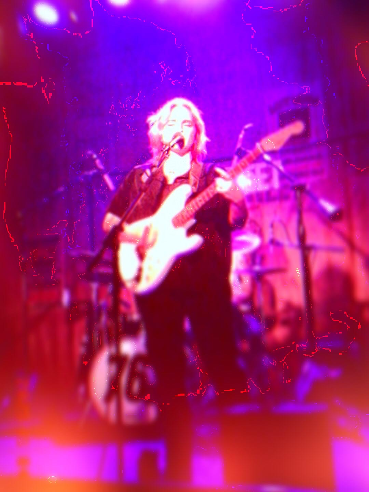

Living a fractured time
This is a series that uses data bending and data-moshing to glitch and distort this series of photographs of the artist Tornsey that I took on my Kodak Charmera cameras. I wanted to create some backgrounds that the artist could use for future poster backgrounds.
